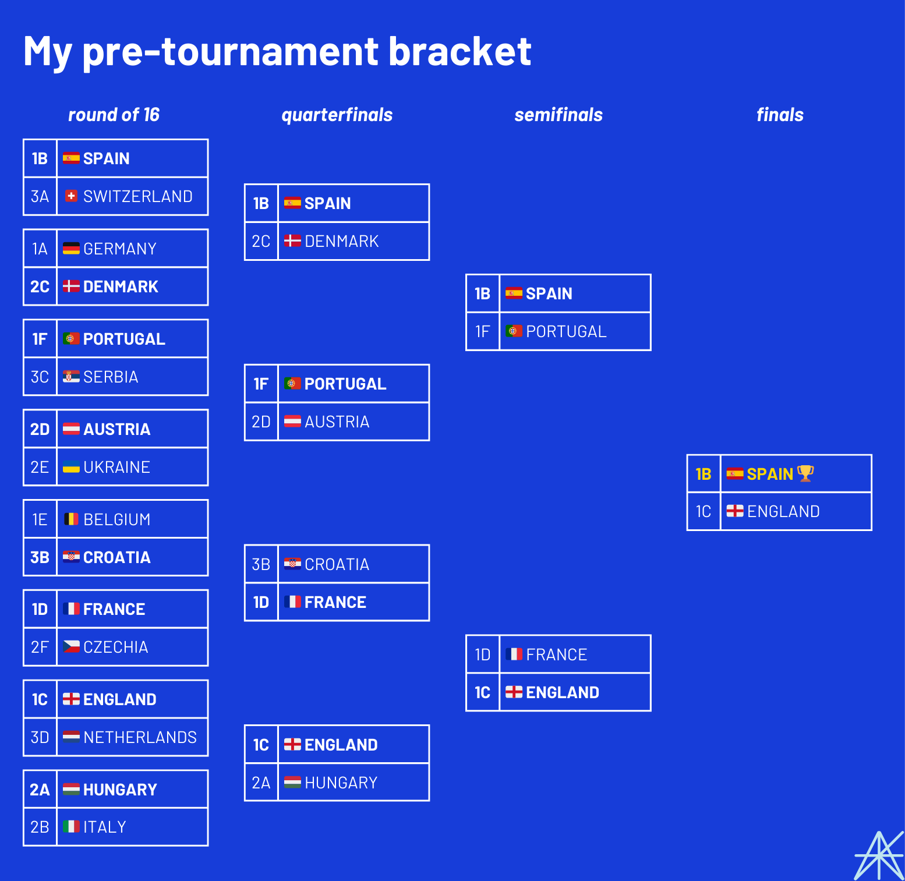
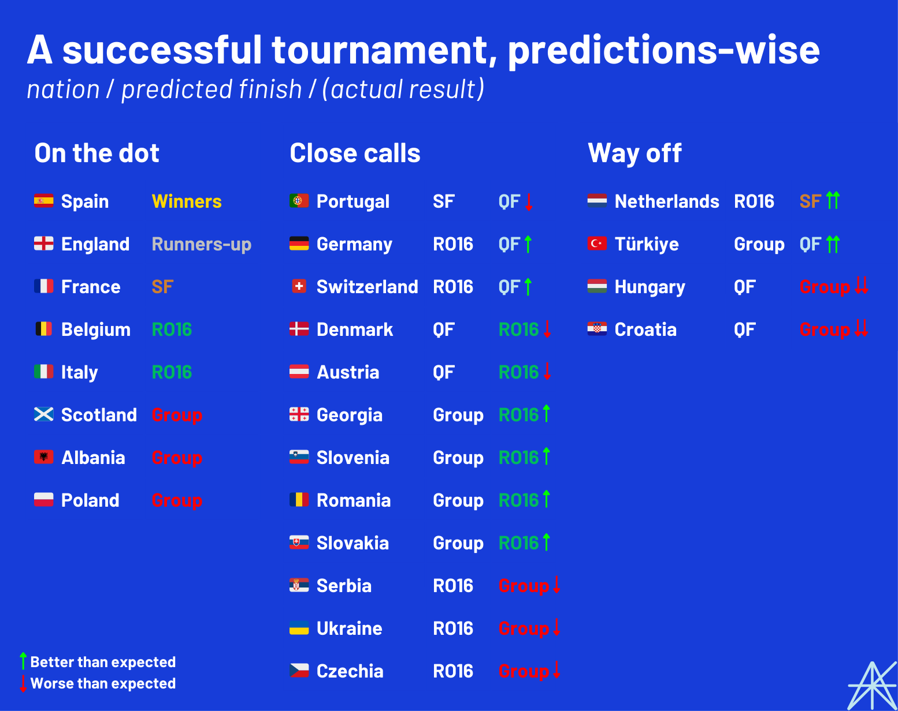

Euro 2024 came to a close with a Spanish victory after Mikel Oyarzabal's 86th-minute winner against England in Berlin. After a month of almost uninterrupted football, it's time to review what happened, how my pre-tournament predictions fared, and lessons learned.
Let's start from the very beginning.

The group stage: the teams that left early, and the importance of scheduling
It seems so long ago now, but a few last-minute goals and monumental upsets turned this tournament upside down for a few teams.
Just three of the eight teams I predicted to falter before the knockout rounds actually went out at that stage: Scotland, Albania, and Poland, all group losers. Meanwhile, teams no one expected anything from – Georgia, Romania, Slovakia, and Slovenia – made it to the round of 16, with Romania even topping their group.
This wasn't supposed to happen. These were four of the five lowest-ranked teams at the tournament according to FIFA, all 46th in the world or lower, and they made it further than 10th-ranked Croatia. How did this happen?
For one, Croatia were extremely unfortunate. In three group games, they accumulated more expected goals (7.10) than England did all tournament (6.43). But thanks to two goals coming in the 95th minute or later, first by Klaus Gjasula for Albania and then by Mattia Zaccagni for Italy, two almost-secured wins turned into hapless draws. As it turned out, that 98th-minute Zaccagni winner sent Italy to the round of 16: without it, they would have made an early exit, and Croatia would have taken their place. That moment was undoubtedly the most consequential of the first round of the competition.
A day earlier, though, there was an even later goal that ended up being completely meaningless. With Scotland and Hungary both winless entering the last matchday, both sides needed a victory, leading to a final stretch of utter insanity in search of a winner at either end. And Hungary got it in the form of Kevin Csoboth's 100th-minute winner, sending the fans into pandemonium and giving the Magyars a real chance at making the round of 16. Following Croatia's draw with Italy, all they needed was England to beat Slovenia or Portugal and Türkiye to both get a point against Georgia and Czechia respectively. Easy, right?
That's where scheduling – and a pair of tenacious displays – came in.
Honestly, I didn't take scheduling into account when making my predictions at all. But in four out of the six groups, the "best" team by FIFA rankings played the "worst" team on the last matchday. Ostensibly, this was done to have two teams in the middle play each other for a spot in the knockout rounds, but on the flipside, it left a few teams with little incentive to win playing against massive underdogs with nothing to lose. So maybe it shouldn't have been as much of a surprise that Slovenia held England to a goalless draw and that Georgia achieved the biggest upset in Euros history over a Portuguese side resting several starters. With those performances, both nations qualified for the round of 16 against all odds.
It was those results that knocked would-be dark horses Hungary out of the tournament despite that miraculous winner. I predicted both Hungary and Croatia to make the quarterfinals, and while the teams I expected them to send home – Italy and Belgium – did go out in the round of 16, they certainly disappointed. In Hungary's case, Switzerland ended up being a lot more impressive than their poor form suggested, and for Croatia, everything that went right for them at the last two World Cups went wrong. Twice in a row, they snatched what felt like defeat from the jaws of victory.
Finally, a few words on the teams that I predicted would go out at the round of 16 but exited one round earlier. Serbia were incredibly disappointing, with Luka Jović's 95th-minute equalizer against Slovenia ending up as their only goal of the tournament. Patrick Schick got a goal, but Czechia couldn't manage to beat Georgia, and Türkiye ended up being a lot better than I thought they would be, as we'll get to. Ukraine, meanwhile, were the losers of the Group of Parity after all four nations in Group E finished level on 4 points, something that hasn't happened since the 1994 World Cup, when Norway got the short end of the stick. They just couldn't recover from their 3-0 loss to Romania, and with none of the other teams in their group having any reason to go for a win on the final matchday, they finished last. Remember when Portugal got 3 points in the group stage in Euro 2016 and went on to win the tournament? The 24-team format can be very forgiving, but sometimes, it can be brutal.
If there's one lesson to be learned from the group stage, at least in terms of forecasting, it's that situation matters. A team can be clearly better than their opponents on paper. But if they've already qualified, it's anyone's game. The rankings, as always, don't tell the full story.
The round of 16: lackluster until the very end
Following the conclusion of the group stage, it was time to separate the contenders from the pretenders.
It's hard to say there were many upsets in the round of 16. Switzerland brushed off a toothless Italy side with ease. Technically, it was an upset, even though it was kind of expected; after all, I predicted that Italy would leave the tournament at this stage. And that's remarkable in itself, because Switzerland were not supposed to be this good. As I mentioned in my predictions article, they had the worst form since the World Cup of any team at the Euros. In the past year, they failed to win against teams such as Belarus, Israel, Kosovo, and Romania. But they turned it on at the Euros, with impressive performances against Hungary and Germany, and then this 2-0 victory against Italy.
I think it was about 20 minutes into the very first match of Euro 2024 when I realized I had massively underestimated Germany. As the hosts romped to a 5-1 win over Scotland, I had a feeling I could end up being very wrong about this team when all was said and done. I predicted Germany to win Group A but lose to Denmark in what ended up being the only round of 16 match I expected that actually took place. Unfortunately for me, Germany won 2-0, which was not a surprise to anyone.
While Denmark weren't the right team to beat Germany at this competition, this German team certainly opened up a flaw in my analysis. Yes, Germany's record since the World Cup was mediocre, but this was the wrong time frame to look at: since Hansi Flick was sacked as manager, they beat France twice plus the United States and the Netherlands. The appointment of Julian Nagelsmann revived German football, bringing the nation back to contender status. As we'll get to, though, this victory landed them a date with Spain in the quarterfinal.
The next day saw both eventual finalists in action, with Spain routing Georgia and England defeating Slovakia after Jude Bellingham's 95th-minute bicycle kick and Harry Kane's extra-time winner turned "going home" into "coming home?" While the massive favorites won, here's an interesting stat in retrospect: Spain were behind for all of 33 minutes at Euro 2024. 21 of those minutes were against Georgia.
It's safe to say no one in Georgia will ever forget the heroics of Kvaratskhelia, Mikautadze, Mamardashvili, and company at this tournament.
The other low-ranked teams, Romania and Slovenia, ended up departing as well, the Dutch dispatching the Romanians with ease and Diogo Costa's incredible penalty shootout performance ending Slovenia's hopes. Romania were a fun team to watch, but they were never going to make the quarterfinal. Slovenia, meanwhile, drew all four of their games in normal time. Maybe they were the true kings of parity.
Meanwhile, as I expected, Belgium fell in the round of 16, but to France instead of Croatia, in what was a very uneventful game. As such, the entire Group of Parity was gone with three rounds still to go. They were not missed.
I just wish Romelu Lukaku scored one goal that actually counted. If not for VAR, he would've won the Golden Boot. This Belgium team lost to Slovakia in what ended up being the biggest Euros upset for about a week, and it was then that everyone knew that their golden generation was fated to fall short once again. And for the second time in six years, it was France that sent them out.
But after seven round of 16 matches, not one had featured teams really going at it for 90 minutes. That all changed when Austria played Türkiye in what instantly became the game of the tournament.
Now, Austria were my primary candidate for dark horses of the tournament. My prediction was that they would finish second in their group behind France – already going against the vast majority who picked the Netherlands here – and then win their round of 16 matchup to make the quarterfinals. I specifically mentioned Rangnick-ball as the key to Austria's success, and it absolutely delivered in Austria's enjoyable wins over Poland and the Netherlands. And as it turned out, I underestimated their chances in the group, because they ended up topping Group D over France. This was team football at its best, and you could tell the players – Marcel Sabitzer, Christoph Baumgartner, and company – believed in the system.
As a result, they ended up playing a similarly high-scoring, high-conceding Türkiye for a place in the quarterfinals that would mean so much to both teams. Just over three months earlier, Austria annihilated Türkiye 6-1 in a friendly that featured many of the same players as this match did.
But thanks to two perfect Arda Güler corner kicks headed in by Merih Demiral, plus the save of Mert Günok's life, a thriller from start to finish ended in Austrian defeat. 2024's dark horses were thwarted by the team everyone thought would be dark horses in 2021.
It was the type of match that left you wondering what might have been, considering all the pieces were there for Austria to make the semifinal. Had they won, they would've faced the Netherlands again in the quarterfinal, and even in a possible semifinal against England, who knows? That's how fine the margins are.
Given what we saw from Austria, I stand by how high I was on this squad heading into the tournament. But Türkiye was probably my biggest miss, predictions-wise. It wasn't the most well-informed decision to have the Turks going down to the Czechs in the group stage, despite their less-than-impressive form heading into the tournament: this was a team with a ton of quality, not just in the form of Güler but also through Ferdi Kadıoğlu and Barış Yılmaz, among others. I just wish I had seen this team coming, because they had more to say after this.
The quarterfinals: Germany gone too soon, and a lopsided bracket
I want to add a quick word on Robert Lewandowski, who in his own unique way completely changed the course of this tournament.
You may remember Mr. Lewandowski from the 4,000-word piece I wrote in which he was a major character. Well, after Poland became the first team to be eliminated from Euro 2024, mostly in his absence, he innocuously scored a penalty against France to earn them their only point in the group. The effect of this goal was that France finished behind Austria in Group D, thus ending up on the side of the bracket with Spain, Germany, and Portugal, seemingly leaving England on their own as heavyweights on the other side.
Without Lewandowski's intervention, who knows? If France takes Austria's place, maybe Türkiye's run never materializes. Maybe the Netherlands don't make the semifinal. Maybe Spain-France becomes the final. In fact, if that goal hadn't happened, I might've predicted all four semifinalists correctly, with France and Portugal no longer meeting in the quarterfinal. Instead, I got three. Touché.
But in some ways, the lopsidedness was baked into the tournament before a ball was kicked. Germany and Spain were overwhelming favorites to win Groups A and B, and so they were destined to meet in the quarterfinal. And going into that match, both teams had assumed positions as the best of the best at Euro 2024. It was unfortunate that one of them had to go home (stay home?) so early.
So, with Mikel Merino's 119th-minute winner, Spain went through to the quarterfinals and the hosts were knocked out. Credit to Germany, though, for pushing Spain further than any other team at the tournament. I definitely underrated this team's potential, and it's possible that their quality was second only to the Spanish. Just a bad draw.
France beat Portugal in a match of few real chances, but some excellent penalties from the French. As a result, the French continued their streak of not scoring or conceding any goals from open play, in what was one of the tournament's big statistical storylines. As for Portugal, I really thought we were going to see more from their attack, but somehow, this Cristiano Ronaldo-headed team didn't score after the second matchday. The most valuable defense at the tournament showed up, but without offense, it didn't matter.
The favorites kept winning on day 2 of the quarterfinals, with England defeating Switzerland and the Netherlands beating Türkiye, both despite conceding the first goal. England were clinical on penalties, Ivan Toney especially, but this was a very reasonable finish for the Swiss in this tournament. It was unfortunate for Türkiye to ultimately fall to the Dutch pressure in the second half, but there was a solid stretch in which they truly believed they were going to return to the semifinals for the first time since 2008. Plus, Güler and Kenan Yıldız opposite him are both still 19. They'll be back.
The semifinals: the favorites meet the moment
Both semifinals featured comebacks: one quick, one slow but seemingly inevitable.
Thanks to the slew of upsets I predicted for the round of 16 that failed to materialize, I only hit the mark on four of the eventual quarterfinalists. But with Spain, France, and England prevailing in that round, I went into the semifinals feeling pretty confident about my chances of nailing the championship. And these two matches really vindicated my feelings about Spain and England, because they were tested and found a way to win in their own style.
Randal Kolo Muani made a surprising start over Antoine Griezmann for France, and made an instant impact with his 7th-minute goal, the team's first from open play all tournament. This, apparently, was a bad omen, because less than 15 minutes later, Lamine Yamal scored what has since been named the goal of the tournament, firmly etching his name into the history books as the youngest-ever goalscorer at the Euros. And then, before it had fully settled in, France were behind through Dani Olmo. The way in which Spain responded, snatching the lead and then barely allowing France to even attempt to equalize at the end of the match, was nothing short of impressive.
France have just not found a winning formula at the Euros as of late. It's unclear where they go from here, because their squads are always so good. That back line was impenetrable to everyone except the Spanish, and there's always more talent coming up the ranks. Don't forget about this team at the World Cup, because they will always be in contention.
The next day, there was a 7th-minute goal once again, as Xavi Simons put the Netherlands ahead against England. But scoring first against England is simply tempting fate. Harry Kane scored the questionable penalty that gave him a share of the Golden Boot, as I predicted, but it wasn't until the 90th minute that the two English substitutes, Cole Palmer and Ollie Watkins, combined to send England to the final for the second Euros in a row. When you have as much talent as the English do, you can afford to bring players like that off the bench. Of course, many will say they should've been on the field earlier. But England were starting to play their best football when it mattered most, and in the end, that's what counts for a spot in the final.
Technically, I underestimated the Netherlands more than just about any team, predicting them to fall in the round of 16 rather than make a semifinal run. But I actually stand by that prediction, because the team I had them losing to was England. It just didn't happen because of how the third-placed teams got scattered in the bracket. I expected the Netherlands to come in third in their group behind France and Austria, which they did. Pulling Romania and Türkiye as knockout stage opponents, though, was inarguably quite lucky. Overall, this team looked about as good as I expected. I just had them facing tougher opposition.
The final: Spain, deserved winners
I have to say it: I told you so.
While many had England winning it all and football coming home at long last, Spain was on the outside looking in. Opta Analyst's supercomputer simulations, for example, gave England, France, and Germany the best chances of becoming champions, with Spain in fourth at under a 10% chance.
But Spain was my pick to win the final, and England my runner-up. So how did I do it, and what went right?
Well, I had England going this far for many of the same reasons others considered them favorites. They had a long run of strong tournament performances, with Gareth Southgate leading them to the Euro finals in 2021 and to World Cup quarterfinals and semifinals. They had the most valuable squad at the tournament by a margin that couldn't completely be accounted for by Premier League transfer value inflation. After all, their two big stars, Harry Kane and Jude Bellingham, play outside England. And their form heading into the tournament was pretty good, going undefeated in a qualifying group with Italy and Ukraine. The hallmark of England these past few years has been that they find a way to win games, and that's what I thought they would do.
But while they win games, they haven't quite been good enough to win tournaments, which factored into my belief that their unlucky streak would continue in this final.
Spain, by comparison, met all my criteria for a team with the potential to win it all. Coming off a disappointing round of 16 exit to Morocco at the World Cup, Spain gained more FIFA ranking points than any of the top Euros teams besides Portugal. They won their qualifying group with ease, and as I pointed out in my predictions, they won the 2022-23 UEFA Nations League trophy as well. I also highlighted their ability to score goals, putting in five or more goals against Northern Ireland, Andorra, Cyprus, and Georgia in the past year alone. I expected that trend to continue, fueled by the promise of exciting players like Lamine Yamal, who overperformed all expectations in his Young Player of the Tournament campaign. Spain ended up having 10 unique goalscorers at the tournament, including co-Golden Boot winner Dani Olmo, who started off on the bench. And of course, Spain have Rodri, who seemingly never loses, at the center of it all; he ended up winning Player of the Tournament for his efforts.
As for the other contenders, only Germany, France, and Portugal were being taken seriously by pundits. I didn't really believe in Germany due to their form, and while Portugal actually had the second-biggest pre-tournament points increase after Austria, I was more impressed by Spain's margins of victory and Nations League performance. As for France, it could've gone either way, but I had them losing to an England team I thought would be markedly improved since the World Cup.
Spain simply had the perfect balance of experienced veterans and young stars (shoutout Nico Williams, who was a revelation in this tournament). It was apparent right from their first-half demolition of Croatia in their first game, which put teams on notice and made them an instant contender for the championship. Spain were the only team to earn the full 9 points from the group stage, and they did so without conceding a single goal. In their championship run, they beat the hosts of all of Europe's other top-five leagues – England, Germany, Italy, and France – plus World Cup semifinalists Croatia. And of course, Germany was hosting the tournament. This was one of the greatest tournament runs in football history.
England's run was decidedly not that, but they deserve credit for doing what they were supposed to do. Their group stage performances were frustratingly boring, but they finished first in their group, which is all that matters. In the knockout rounds, they got better and better as the tournament went on, and were deserving winners against the Netherlands. There was a phase in the final where it really looked like they might come back from 1-0 down to win yet again, after Cole Palmer came on. But ultimately, Spain pushed through and got the winner, created by yet another Lamine Yamal assist. Yet again, I ask the question: how was he born in 2007??
Both England and Spain will feel optimistic about the future following this tournament. Following Gareth Southgate's resignation, the English will be looking for a manager to push them over the line at the World Cup after "60 years of hurt." It certainly helps that Jude Bellingham, Bukayo Saka, and Phil Foden are all under 25. They're going to be around for a while.
Spain, meanwhile, are ahead of schedule. This team should only get better between now and the World Cup. Remember, they didn't have either of their star Barcelona midfielders, Gavi and Pedri, for the semifinal or final. And no one has figured out how to stop the dynamic duo of Nico Williams and Lamine Yamal from terrorizing their defenses. Other standout players, like Marc Cucurella or Dani Olmo, will be hitting their primes. Spain were a breath of fresh air in a tournament dominated by conservative teams and managers, and they've instantly become contenders to win in 2026. One can imagine Spain manager Luis de la Fuente using a line from the not-dissimilar-looking Dan Hurley: "You better get us now, because it's coming." Because Spain is coming. ∎
And that's a wrap on the Euros! Thankfully, I can rest now that there aren't any more major sporting events this summer. Wait…
Again, my notes on teams' valuations are here. I'm hoping I can expand on this analysis to nail the World Cup final in two years' time. Is soccer coming home? (Spoiler: no.)
Finally, thanks to UEFA for approving the script I sent them for the final. Much appreciated, apologies to England.